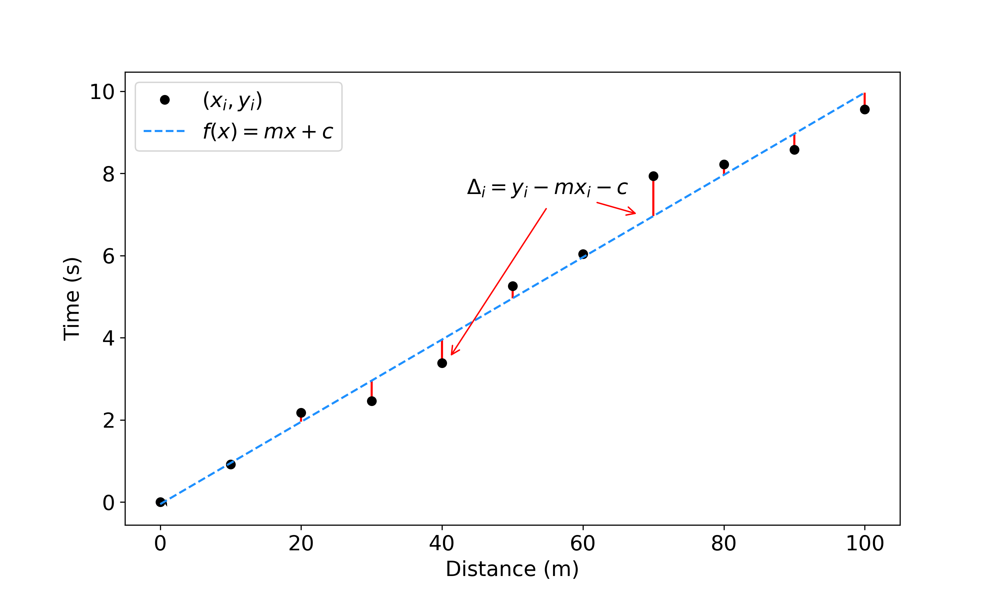

%config InlineBackend.figure_format = 'retina'
%matplotlib inline
import matplotlib.pyplot as plt
import numpy as np
import pandas as pd
from scipy.optimize import curve_fit
plt.rcParams.update({'font.size':15})
Fitting a model to data#
Overview#
Questions
How do you fit a model to data?
What is least squares fitting?
Objectives
Use least-squares to fit a line to some data
Confirm your results using
curve_fit
How do you fit a model to data?#
What do we mean by “fitting a model to data”? A model is just something that describes your observations. It can be as simple as a straight line fit with just 1 or two unknowns, or as complicated as a cosmological model with many unknown parameters.
When we’re fitting a model to data we’re using some kind of theory or prediction about how different observed variables are related. A common example is fitting a straight line, \(y=mx + x\), to some data to try to find a linear relationshp.
But what’s actually happening when we do this? How are we determining \(m\) and \(c\)?
Fitting a straight line#
We’re going to look at the BoltData again to show how the process works. Find your file and read in the data into a dataframe:
bolt_df = pd.read_csv('./data/BoltData.csv', names=('distance', 'err_distance', 'time', 'err_time'), header=0)
As always, have a quick look at the dataframe to make sure it’s read in as expected. Don’t skip this step! It will save you a lot of time in the long run to get in the habit of checking that it looks OK right at the start.
bolt_df
| distance | err_distance | time | err_time | |
|---|---|---|---|---|
| 0 | 0 | 0.02 | 0.000000 | 1.004810 |
| 1 | 10 | 0.02 | 0.923422 | 0.637569 |
| 2 | 20 | 0.02 | 2.178145 | 0.382366 |
| 3 | 30 | 0.02 | 2.461897 | 0.911785 |
| 4 | 40 | 0.02 | 3.387051 | 0.198510 |
| 5 | 50 | 0.02 | 5.263879 | 1.152222 |
| 6 | 60 | 0.02 | 6.042705 | 0.161827 |
| 7 | 70 | 0.02 | 7.939192 | 0.732011 |
| 8 | 80 | 0.02 | 8.221779 | 1.267329 |
| 9 | 90 | 0.02 | 8.578128 | 0.590908 |
| 10 | 100 | 0.02 | 9.562874 | 1.022337 |
Previously we’ve used curve_fit to fit a best-fit line to our data. Here we’re going to look at what curve_fit is actually doing.
When we worked with this data before we defined a function such as
def best_fit(x, m, c):
return m*x + c
corrseponding to $\( f(x) = m x + c \)$
and used curve_fit to find the best values of \(m\) and \(c\) (the slope and intercept). But what is curve fit actually doing? What do we mean by the “best” values?
curve_fit uses the least squares method to find the best values.
The figure below illustrates what’s happening:
{kind=link}
Our data has \(N\) data points with the values \(x_i\), \(y_i\). The vertical distance between each point and the line (the red lines on the figure) is $\( \Delta_i = y_i - m x - c \)$
Least squares finds the values of \(m\) and \(c\) that minimises the sum of the distances squared, i.e. it minimises $\( S = \sum_{i=1}^{N} (\Delta_i^2)\)\( \)\( S = \sum_{i=1}^{N} (y_i - m x_i - c)^2 \)$
Why does least squares minimise \(\sum \Delta_i^2\)? Look at the figure above and think about why we want to minimise the squared values rather than just \(\sum \Delta_i\).
To find the the values of \(m\) and \(c\) that minimise this sum we have to differentiate it with respect to \(m\) and \(c\) and solve the equations
and $\(\dfrac{\delta S}{\delta c} = 0 \)$
For our example of a straight line this is relatively straight forward.
Finding \(c\)#
For \(\dfrac{\delta S}{\delta c}=0\) we find
(from here onwards \(\sum = \sum_{i=1}^{N}\) to make it easier to read)
Rearranging gives
Finding \(m\)#
The same thing is done for \(\dfrac{\delta S}{\delta m}=0\), substituting in the expression for \(c\) found above. I haven’t included the all the steps here, but you can work through the maths to convince yourself that it works. You should end up with
We can now calculate the best values of \(m\) and \(c\) by finding all the different summation values that we need. For a straight line fit we need \(\sum x_i\), \(\sum y_i\), \(\sum x_i y_i\) and \(\sum (x_i^2)\). We can find these using the sum function from numpy.
\(\sum x_i\) and \(\sum y_i\) are straightforward; they are just the sums of the \(x\) (distance) and \(y\) (time) values in our table. numpy can do that for us:
sum_x = np.sum(bolt_df.distance)
sum_y = np.sum(bolt_df.time)
print(sum_x, sum_y)
550 54.559074164
\(\sum (x^2)\) is also easy to do:
sum_x_2 = np.sum((bolt_df.distance**2))
print(sum_x_2)
38500
Exercise: Calculate \(\sum x_i y_i\)
Calculate the value of \(\sum x_i y_i\). Assign it to a variable called sum_x_y
Show code cell content
sum_x_y = np.sum((bolt_df.distance * bolt_df.time))
print(sum_x_y)
3829.69710839
Now we can plug these into the expressions we have for \(m\) and \(c\).
Exercise: Calculate \(m\) and \(c\)
Use the summation values just calculated to find the best fit values for \(m\) and \(c\). Make a new plot of time against distance showing the data and the best fit line you have just found.
Hopefully you’ve ended up with a figure that looks something like this:

Exercise: Check your result
Now you have your values for \(m\) and \(c\) from doing least-squares by hand. Check your results using curve_fit. Remember to define your function first.
Key Points:#
curve_fitfinds the parameters of the functions it’s fitting using least squares.Least squares minimises the sum of the squares of the distances between the data and the function.
To find the values of the parameters you’re fitting, differentiate your function with respect to each of the unknowns.
The example above is for a simple straight line fit. The same method holds for whatever function you choose - just differentiate your function with respect to each unknown parameter.